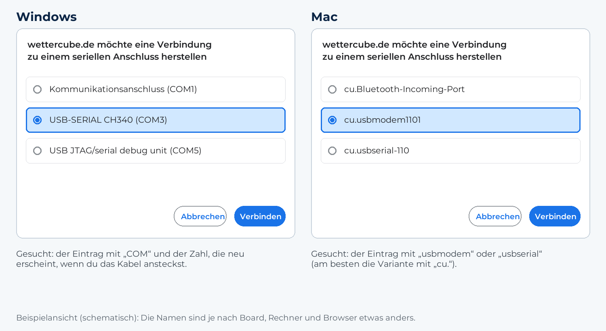

ESP32-S3 Wetterdisplay mit Touch, DWD-Warnungen, Pollenflug & Warnkarte
Verbinde den ESP32-S3 per USB-C mit dem Computer. Chrome oder Edge Browser erforderlich. Achtung: Setzt du im Installationsfenster den Haken „Gerät löschen“, wird der gesamte Flash-Speicher gelöscht, auch gespeicherte WLAN-Daten und Einstellungen. Ohne den Haken bleiben sie erhalten.

Munchen, Koeln, DusseldorfFinger beim Booten auf das Display halten bis „Neukalibrierung" erscheint, dann loslassen.
Wetter · 4-Stunden-Vorhersage · Pollenflug (8 Allergene) · Regenwarnung · Pollenwarnung · DWD Wetterwarnungen · Niederschlagsradar · Sonne & Mond · UV-Index · WebUI · OTA-Update · Captive Portal
Hardware: ESP32-S3 N16R8 · ILI9488 3,5" 480×320 Touch-Display
Datenquellen: Weather data by Open-Meteo.com (CC BY 4.0; Werte teils umgerechnet) · Pollen/Luftqualität: Contains modified Copernicus Atmosphere Monitoring Service information, über Open-Meteo · Ortssuche: Location data by GeoNames via Open-Meteo · Warnungen, Pollenflug, Biowetter und Radar: Quelle: Deutscher Wetterdienst (CC BY 4.0)
Quellcode: JPPeterson-lab/WetterCubePlus (Apache-Lizenz 2.0)
Anleitung: Wiki